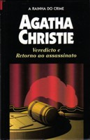

Veredicto e Retorno ao assassinato
Verdict and Go Back For Murder
Na peça Veredicto, Agatha Christie cria uma trama diabólica. Agitada e doente, Anya Hendryk conserva traços do antigo encanto e beleza, mas, entrevada numa cadeira de rodas, tornou-se uma mulher amargurada. Um dia, é encontrada morta por envenenamento. Mas os fatos ainda não foram esclarecidos e uma dúvida paira no ar: foi suicídio ou assassinato? Encenada pela primeira vez em 1960, a peça Retorno ao Assassinato é inspirada no livro Os Cinco Porquinhos. Uma mulher é julgada e condenada pelo assassinato do marido, morrendo pouco tempo depois na prisão. Passados 16 anos, a filha deles quer reconstituir o passado e descobrir a verdade.